Exploratory Data Analysis¶
Introduction¶
The objective is to use the loan data to build a model that can predict the loan status (whether or not a loan will be fully paid or charged off) and interpret the results to find the factors which affect the result. Such a predictive model could help LendingClub investors make better-informed investment decisions.
We want to develop a model that is accurate and interpretable.
This problem is a binary classification as I have only two classes to predict.
Data¶
In this project, I will work with the publicly available Lending Club data on [Kaggle](https://www.kaggle.com/wordsforthewise/lending-club). The dataset is 1.8+ GB of size, including 1.6 millions of loans from 2007 to 2017Q, each of which has 150 associated features.
The dataset has numerical, categorical and missing values. Because there are so many features (150+), i will start the data engineering with dropping unnecessary features and then deal with the remaining features more in detail.
Target Variable¶
We are trying to predict the loan_status column. Let’s check the value distributions in this column first:
Fully Paid 53872
Current 43839
Charged Off 13406
Late (31-120 days) 1087
In Grace Period 435
Late (16-30 days) 229
Does not meet the credit policy. Status:Fully Paid 116
Does not meet the credit policy. Status:Charged Off 49
Default 1
Name: loan_status, dtype: int64
We will try to distinguish 2 cases: loans being fully paid or charged off, assuming that they both meet the credit policy. We will only keep the rows with loan_status being “fully paid” or “charged off”.
About 80% (~647k) of the loans have been fully paid, and 21% (168k) have been charged off. Unbalanced data. I will try to handle this unbalance in the cross validation and need to pick appropriate metrics.
Feature Selection¶
<a id=”featureselection”></a> The raw data has 150 features, but not all of them are useful. Definitions of the columns are given in the Lending Club “Data Dictionary” [available here](https://www.lendingclub.com/info/download-data.action).
- I will drop the features with the following criteria:
More than 50% of the data is missing
The feature would not have been available at the time of the loan application (“issue_d”).
- I will also address the following:
convert strings to numerical values
drop superfluous attributes
highly correlated predictors
Drop features missing too much data¶
<a id=”missing_data”></a> From this table, we can see that there is a huge gap between features missing some data (~15% and below) and those missing lots of data (up to 100%!). I chose 50% as the cutoff.
Remove “cheat” data¶
<a id=”cheat_data”></a> The goal of this project is to predict whether a loan will be paid off BEFORE making the decision to lend the loan. Therefore, I would like to remove the features that were unavailable before lending a loan:
['acc_now_delinq', 'acc_open_past_24mths', 'addr_state', 'annual_inc', 'application_type',
'avg_cur_bal', 'bc_open_to_buy', 'bc_util', 'chargeoff_within_12_mths',
'collection_recovery_fee', 'collections_12_mths_ex_med', 'debt_settlement_flag',
'delinq_2yrs', 'delinq_amnt', 'disbursement_method', 'dti', 'earliest_cr_line',
'emp_length', 'emp_title', 'fico_range_high', 'fico_range_low', 'funded_amnt',
'funded_amnt_inv', 'grade', 'hardship_flag', 'home_ownership', 'id', 'initial_list_status',
'inq_last_6mths', 'installment', 'int_rate', 'issue_d', 'last_credit_pull_d',
'last_fico_range_high', 'last_fico_range_low', 'last_pymnt_amnt', 'last_pymnt_d',
'loan_amnt', 'loan_status', 'mo_sin_old_il_acct', 'mo_sin_old_rev_tl_op',
'mo_sin_rcnt_rev_tl_op', 'mo_sin_rcnt_tl', 'mort_acc', 'mths_since_recent_bc',
'mths_since_recent_inq', 'num_accts_ever_120_pd', 'num_actv_bc_tl',
'num_actv_rev_tl', 'num_bc_sats', 'num_bc_tl', 'num_il_tl', 'num_op_rev_tl',
'num_rev_accts', 'num_rev_tl_bal_gt_0', 'num_sats', 'num_tl_120dpd_2m', 'num_tl_30dpd',
'num_tl_90g_dpd_24m', 'num_tl_op_past_12m', 'open_acc', 'out_prncp', 'out_prncp_inv',
'pct_tl_nvr_dlq', 'percent_bc_gt_75', 'policy_code', 'pub_rec', 'pub_rec_bankruptcies',
'purpose', 'pymnt_plan', 'recoveries', 'revol_bal', 'revol_util', 'sub_grade',
'tax_liens', 'term', 'title', 'tot_coll_amt', 'tot_cur_bal', 'tot_hi_cred_lim',
'total_acc', 'total_bal_ex_mort', 'total_bc_limit', 'total_il_high_credit_limit',
'total_pymnt', 'total_pymnt_inv', 'total_rec_int', 'total_rec_late_fee',
'total_rec_prncp', 'total_rev_hi_lim', 'url', 'verification_status', 'zip_code']
After checking the definition of these features, I will drop the ones that would have not been available before a load was lend:
['addr_state', 'annual_inc', 'application_type', 'dti', 'earliest_cr_line', 'emp_length',
'emp_title', 'fico_range_high', 'fico_range_low', 'grade', 'home_ownership', 'id',
'initial_list_status', 'installment', 'int_rate', 'issue_d', 'loan_amnt', 'loan_status',
'mo_sin_old_il_acct', 'mo_sin_old_rev_tl_op', 'mort_acc', 'open_acc', 'policy_code',
'pub_rec', 'pub_rec_bankruptcies', 'purpose', 'revol_bal', 'revol_util', 'sub_grade',
'term', 'title', 'total_acc', 'url', 'verification_status', 'zip_code']
Inspect the remaining features one by one¶
<a id=”inspect”></a> Now we are left with reasonable number of features (34), I will screen each feature and decide if a feature should be dropped.
The tasks involved are: - Visualization with count distributions, bar plot & KDE plot with faceting on the loan status - Drop useless features (e.g., “id”) - Cleaning & Formatting (e.g., [“emp_length”](#emp_length), [“earliest_cr_line”](#earliest_cr_line)) - Transformation of features (e.g., log transformation of [“annual_inc”](#annual_inc), average of [“fico_score”](#fico)) - Pick the most relevant features in the data (e.g., “sub_grade” vs “grade”, “zip_code” vs “addr_state”)
issue_d¶
Data Dictionary: “The month which the loan was funded.
Because we are only using the variables that are available before the loan was funded to make predictions, issue_d will not be included in modeling. This feature is kept here for train/test sample split, after which this feature will be dropped.
id¶
Data Dictionary: “A unique assigned ID for the loan listing.”
“id” is a unique index. It’s not useful as a categorical variable (so many unique values), nor as a numerical variable (a wild range of its values). Therefore I will drop this feature.
loan_amnt¶
Data Dictionary: “The listed amount of the loan applied for by the borrower. If at some point in time, the credit department reduces the loan amount, then it will be reflected in this value.”
“loan_amnt” ranges from $0.5 k to $40 k, with a median of 12k.
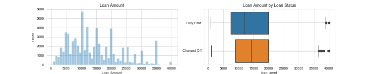 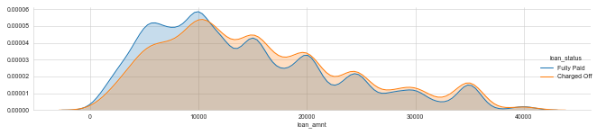“Charged off” loans seem to have higher loan amount. I will further examine the statistical difference in the later analysis.
term¶
Data Dictionary: “The number of payments on the loan. Values are in months and can be either 36 or 60.”
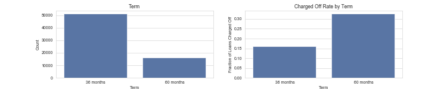 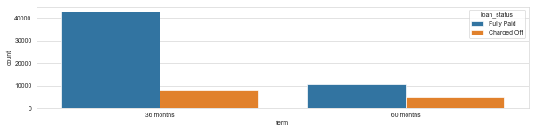About 76% of the loans are 36 months and the rest are 60 months. The latter tends to have lower fraction of being fully paid.
Compare the charge-off rate by loan period
17% of the 36-month loans are charge off, while 33% of the 60-month are charged off. Longer term leads to higher charged off? This feature should be useful in modeling.
int_rate¶
Data Dictionary: “Interest Rate on the loan.”
The interest rage ranges from 5% to 31%, with a median at 13%.
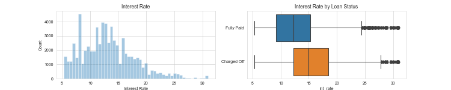 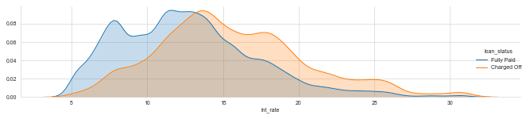The higher the interest rate is, the more likely for being charged off. There are some outliers in the Fully Paid dataset. Let’s take a look at them, as outliers may distort ML analysis.
Outlieres¶
outliers can be exactly what we want to learn about, e.g., anomaly detection.
In this project, however, outliers may distort the picture of the data in both statistical analysis and visualization.
Below, I use the modified Z-score method and the IQR method. Note that the variable must be continuous, not categorical, for any of these functions to make sense.
Any values > 75% percentile (18.5 for “charged off”, 15.61 for “Fully Paid”) are defined as outliers.
The percentage of outliers is roughly the same for the Fully Paid/Charged off data, ~23%. A bit too much to be dropped. I will keep these outliers for now.
installment¶
Data Dictionary: “The monthly payment owed by the borrower if the loan originates.”
Installments range from $5 to $1715, with a median at $377.
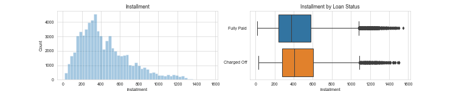 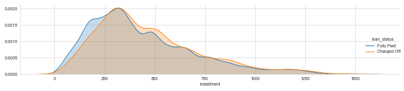Charged-off loans tend to have higher installments but the difference of the mean values is very small (460 vs 431). Later, I will do a KS test to see if there are any statistical difference of “installment” between Fully Paid/charged off.
grade, sub_grade¶
Data Dictionary for grade: “assigned loan grade.” Data Dictionary for sub_grade: “LC assigned loan subgrade.”
What are the possible values of grade and sub_grade?
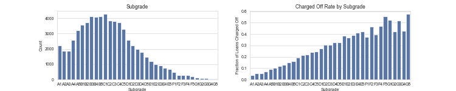 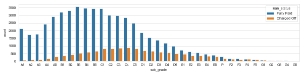 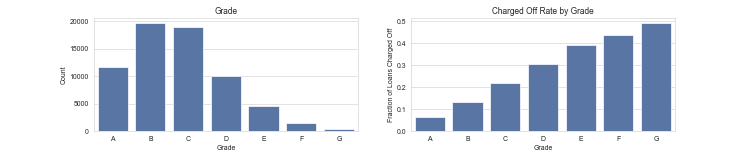 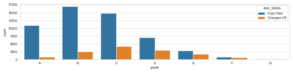There is a trend of higher fraction of loans Charged off as the grade going from A to G, with some small variations among subgrades.
emp_title¶
Data Dictionary: “The job title supplied by the Borrower when applying for the loan.”
There are too many unique titles for this feature to be useful, so we drop this feature.
emp_length¶
Data Dictionary: “Employment length in years. Possible values are between 0 and 10 where 0 means less than one year and 10 means ten or more years.” The actual data does not match this description:
There are 42k loans without the information on emp_length. Convert this feature to integers.
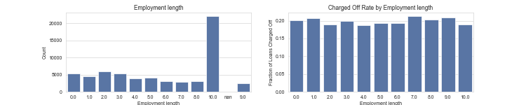 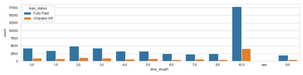One third of the loans go to the people with longer than 10 years of employments. However, the fully paid rate seems not quite related to this feature. Again, this will be further examined in a statistical test at the end.
home_ownership¶
Data Dictionary: “The home ownership status provided by the borrower during registration or obtained from the credit report. Our values are: RENT, OWN, MORTGAGE, OTHER.”
Replace “ANY” & “None” with “OTHER”.
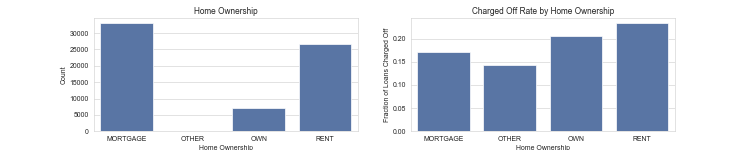 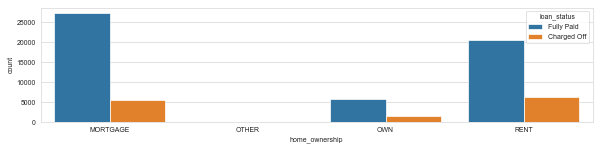There appear to be small differences in charge-off rates by home ownership status. Mortgage & OTHER has slightly less probability of Charged-Off. Because of the large numbers of observations in each category, these differences might be statistically significant.
annual_inc¶
Data Dictionary: “The self-reported annual income provided by the borrower during registration.”
Annual income ranges from $0 to $8M, with a median at $65k, which doubles the national median individual income in the US ($40k for males and $25k for females). Due to the large range of variation, we log-transform the values.
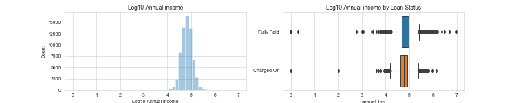 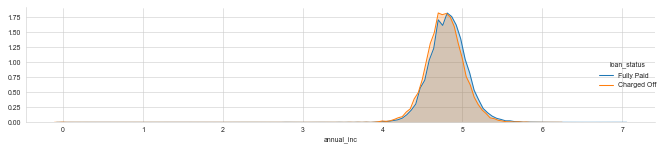Let’s look closer of the difference here; For both cases, there are quite a few outliers (in the lower end).
verification_status¶
Data Dictionary: “Indicates if income was verified by [Lending Club], not verified, or if the income source was verified.”
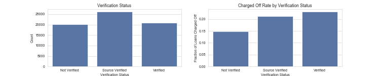 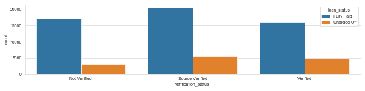Surprisingly, verified loans have higher chance of being charged-Off. I would guess the opposite way.
purpose¶
Data Dictionary: “A category provided by the borrower for the loan request.”
Now let’s check the charged-off rates of purposes: We see that, 30% of the loans for small_business are charged off, but only 12% of wedding are charged Off.
title¶
Data Dictionary: “The loan title provided by the borrower.”
There are 12 unique purposes in the dataset, and from the top 10 titles, it seems that this information is covered in the “purpose”. So we drop this column.
zip_code, addr_stat¶
Data Dictionary for zip_code: “The first 3 numbers of the zip code provided by the borrower in the loan application.” Data Dictionary for addr_state: “The state provided by the borrower in the loan application.”
There are many unique “zip_code” values, and the zip_code info should be equivalent to “addr_stat”. Therefore we drop the “zip_code”.
MS has the highest fraction of Charged Off (0.28), whereas DC has the lowest fraction at 0.13.
dti¶
Data Dictionary: “A ratio calculated using the borrower’s total monthly debt payments on the total debt obligations, excluding mortgage and the requested LC loan, divided by the borrower’s self-reported monthly income.”
The values of -1 or 999 are probably outliers. Let’s look at its histogram .
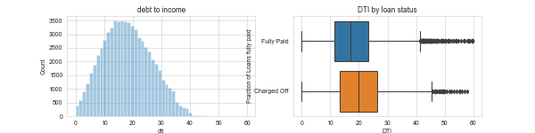Very few (0.01%) outliers with dti > 60. From the figure it seems that the Charged Off loans have higher DTI. Let’s check.
It’s clear that borrowers who have higher DTI are more likely to be charged off
open_acc¶
Data Dictionary: “The number of open credit lines in the borrower’s credit file.”
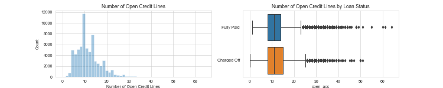 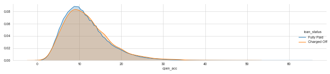There seems no significant difference in number of credit lines between fully paid loans and charged-off loans.
earliest_cr_line¶
Data Dictionary: “The month the borrower’s earliest reported credit line was opened.”
Rather than converting it to a date, I will use a scalar to describe the length of time since the first line of credit. If all other variables are held equal, the longer you have had lines of credit the better.
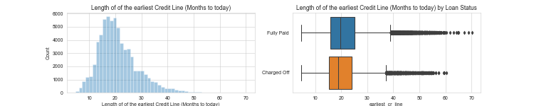 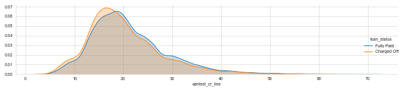Borrowers who charged off have opened their first credit line more recently, although their medians are almost the same.
fico_range_low, fico_range_high¶
Data Dictionary for fico_range_low: “The lower boundary range the borrower’s FICO at loan origination belongs to.” Data Dictionary for fico_range_high: “The upper boundary range the borrower’s FICO at loan origination belongs to.”
Check the correlation between the two: These two are highly correlated, therefore we only need to keep one. We create a new feature, “fico_score” which is the mean value of the “fico_range_low” and “fico_range_high”
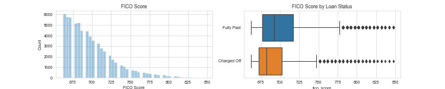 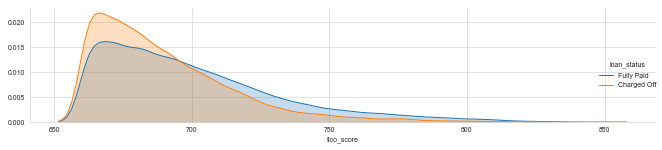There is noticeable difference in FICO scores between fully paid and charged-off loans.
A Thought: As FICO score itself stands out as an overall important factor. I would like to check the most significant contributors (acct number, earliest credit card, and the ratio of total monthly debt payments on the total debt obligations) to the FICO score, based on my own knowledge.
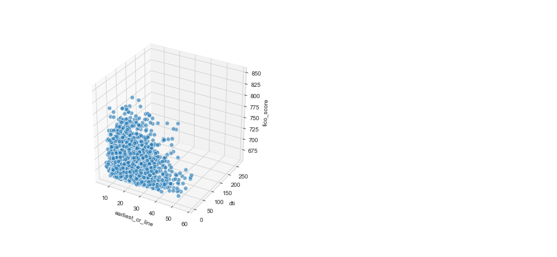It seems that the higher the fico_score is, the lower the int_rate. Let’s take a look at their correlations.
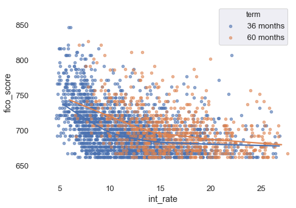short-term loans have higher “fico_score” especially at lower “int_rate”. I will explore the correlations between variables in the later analysis.
pub_rec¶
Data Dictionary: “Number of derogatory public records.”
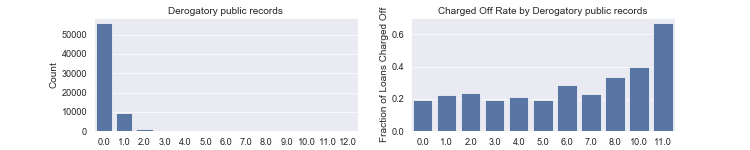 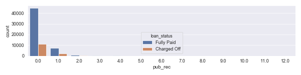“pub_rec” > 11 have significant of Charged-Off rate. However, it’s affected by low-counts. If we look at the overall statistics, the mean difference in “pub_Rec” is just 0.04 for fully paid/charged Off
What if we group the few bins with lower values together into 1 bin?
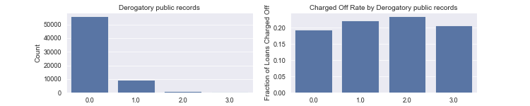 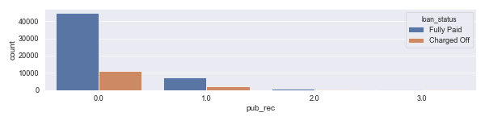After grouping, it is clear that: pub_rec are mostly 0 & 1; pub_rec with 1 and higher have higher chance of being charged off than pub_rec of 0.
pub_rec_bankruptcies¶
Data Dictionary: “Number of public record bankruptcies.”
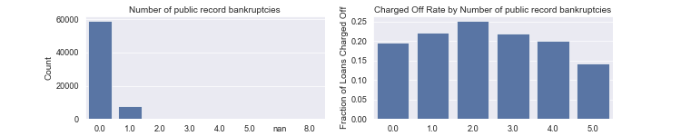 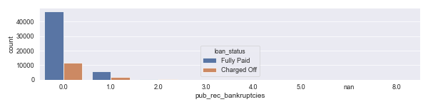“pub_rec” and “pub_rec_bankruptcies” are highly correlated. could only feed one of them into the modeling.
revol_bal¶
Data Dictionary: “Total credit revolving balance.”
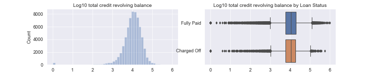 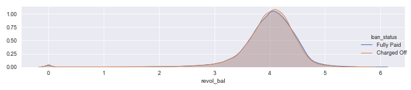revol_util¶
Data Dictionary: “Revolving line utilization rate, or the amount of credit the borrower is using relative to all available revolving credit.”
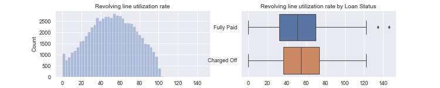 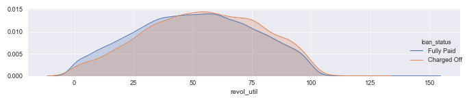Charged Off loans tend to have higher revol_util.
Optimal Pipeline¶
We used SKSurrogate, to find an optimal pipeline that maximizez the accuracy of predictions. The following pipeline was selected based on an evolutionary optimization algorithm and surrogate search:
Pipeline(memory=None,
steps=[('stp_0',
StackingEstimator(decision=True,
estimator=GaussianNB(priors=None,
var_smoothing=0.05435651423983356),
probs=True, res=True)),
('stp_1',
LGBMClassifier(boosting_type='gbdt', class_weight=None,
colsample_bytree=1.0, importance_type='split',
learning_rate=0.10330688094152427, max_depth=-1,
min_child_samples=20, min_child_weight=0.001,
min_split_gain=0.02336652134254079,
n_estimators=45, n_jobs=-1, num_leaves=18,
objective=None, random_state=None,
reg_alpha=0.0, reg_lambda=0.0, silent=True,
subsample=1e-06, subsample_for_bin=200000,
subsample_freq=0))],
verbose=False)
The following shows some performance measures for the pipeline:


The solid learning curves are assuring the stability of the model.